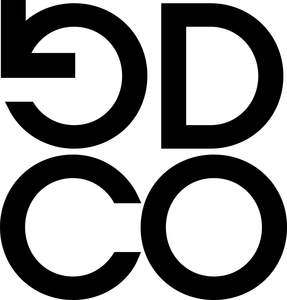

Trade Mark Journal No.2025/015 11 April 2025
UK00004180882 28 March 2025 (9,18,25,35,41,45)

- Class 9
- Apparatus for recording, transmission or reproduction of sound or images; magnetic data carriers, recording discs; compact discs, DVDs and other digital recording media; data processing equipment; computer software; computer hardware; telecommunications apparatus; PDAs (Personal Digital Assistants); mobile telephones; headphones; mobile telephone covers; digital music downloadable from the internet; electronic publications (downloadable); magnetic data carriers; recording disks; electronic publications provided on-line from databases or the Internet; computer software and telecommunications apparatus to enable connection to databases and the Internet; digital music provided from the Internet; digital music provided from MP3 Internet websites; digital music; eyewear; sunglasses; parts and fittings for all the aforesaid goods.
- Class 18
- Articles of luggage, trunks, bags, travelling bags, handbags, briefcases, wallets, purses, umbrellas, parasols, walking sticks, parts and fittings for all the aforesaid goods, all included in Class 18.
- Class 25
- Clothing; footwear; headgear.
- Class 35
- Advertising; business management; business administration; office functions; business consultancy and research; monitoring and evaluation of business and market opportunities; business collaboration and networking services; arranging of exhibitions for business purposes; providing business data information services; business planning, assistance and management services; book-keeping and accounting services; business services relating to the provision of sponsorship; organisation, operation and supervision of loyalty schemes and incentive schemes; promotional and public awareness campaigns; promoting public awareness of environmental issues and initiatives; business services relating to fund raising campaigns; organising and conducting volunteer programmes and community service projects; retail services connected with the sale of entertainment and education products, clothing, footwear, headgear, eyewear, personal grooming products, bags, wallets and luggage; the bringing together, for the benefit of others, of a variety of financial and monetary services, health club and spa services, gaming services and environmental services, enabling customers to conveniently view and purchase those services; information and advisory services relating to the aforesaid.
- Class 41
- Education; providing of training; entertainment; sporting and cultural activities; production, presentation, syndication, reviewing, editing, networking and rental of material with a visual and/or audio element, including television and radio programmes, films, sound and video recordings, interactive entertainment, CDIs, CD-Roms, computer games, live shows, stage plays, exhibitions and concerts; production, presentation, syndication, reviewing, editing, networking and rental of digital media content; electronic games services provided by means of the Internet or any other communications network; music publishing; music recording; arranging and conducting of live entertainment events; recording and editing of sounds and/or images; multimedia production services; production of computer generated imagery for use in audio and/or visual materials; photography services; recording, production and post-production services for music and moving images; special event planning for social entertainment purposes; production of visual effects for videos, pre-recorded electronic and digital media, animation production services; special event planning for commercial, promotional or advertising purposes; providing digital music from the Internet (not downloadable); music festival services; organising music festivals; organisation, conduct and supervision of competitions and lotteries and prize draws; reservation and sale of tickets for shows, cinema, concerts, theatre, festival and sports events; nightclub, health club and fitness club services; exercise and fitness classes; wellness services; personal trainer services; education services relating to music and entertainment, finance and money, health and wellbeing, leisure and lifestyle, social and environment issues; information and advisory services relating to the aforesaid.
- Class 45
- Protection and exploitation of intellectual property relating to sound and/or visual materials; personal introduction services; personal networking services; information and advisory services relating to the aforesaid.
Good Company Records Limited
Representative: Appella Limited